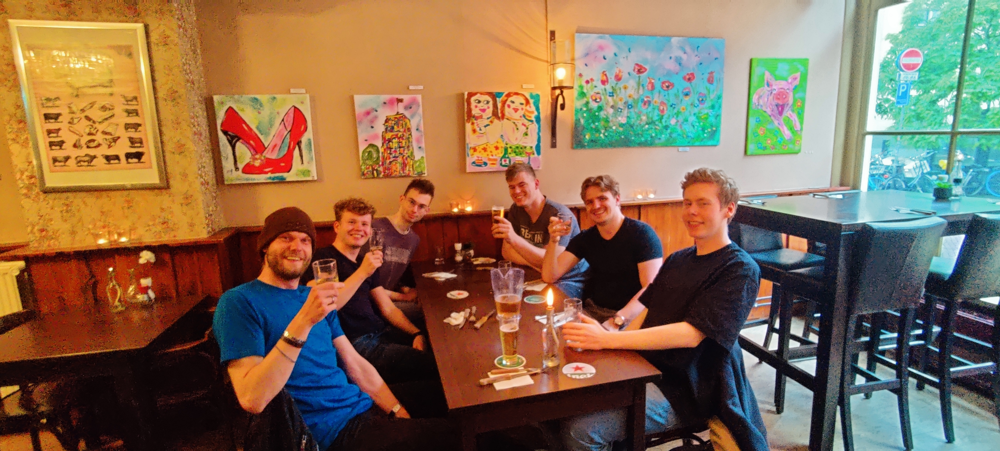
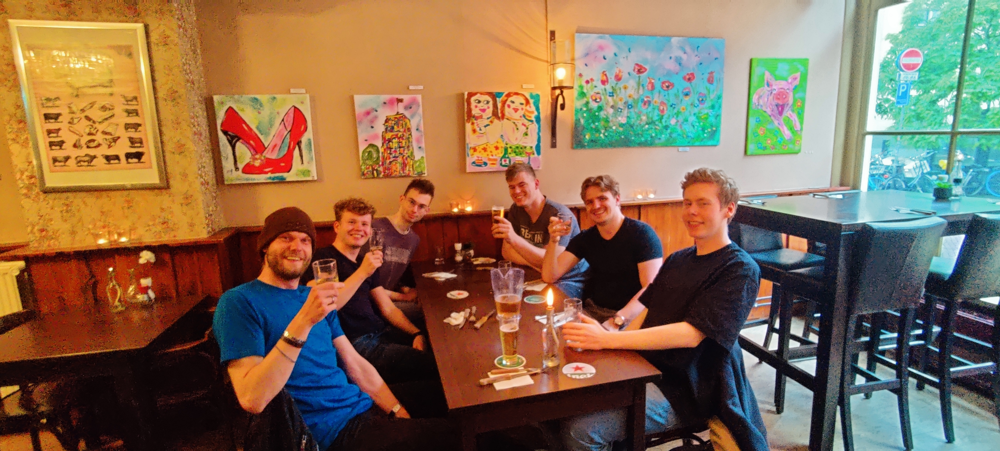
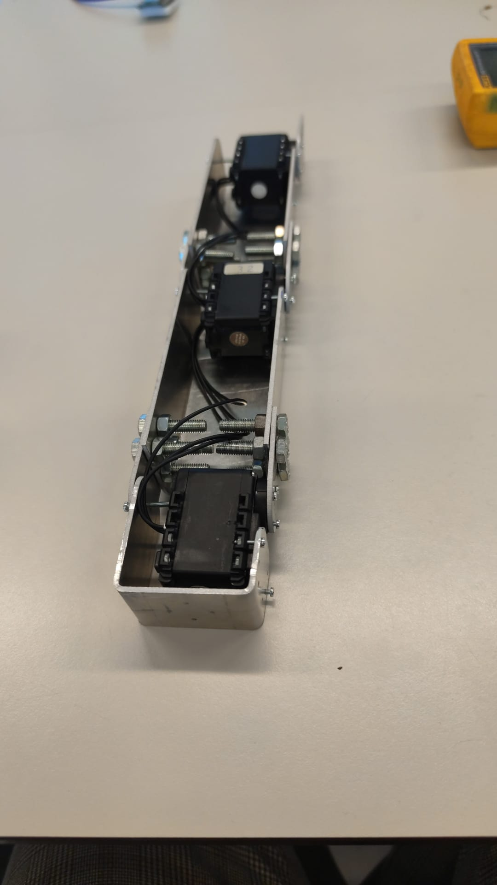
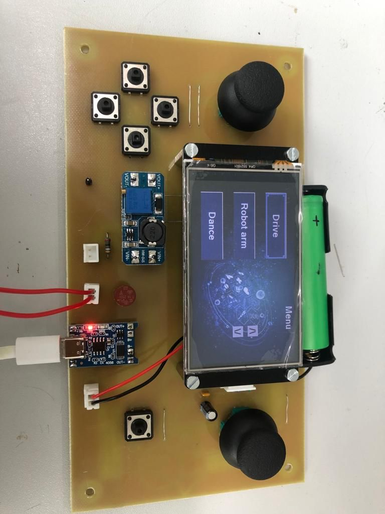
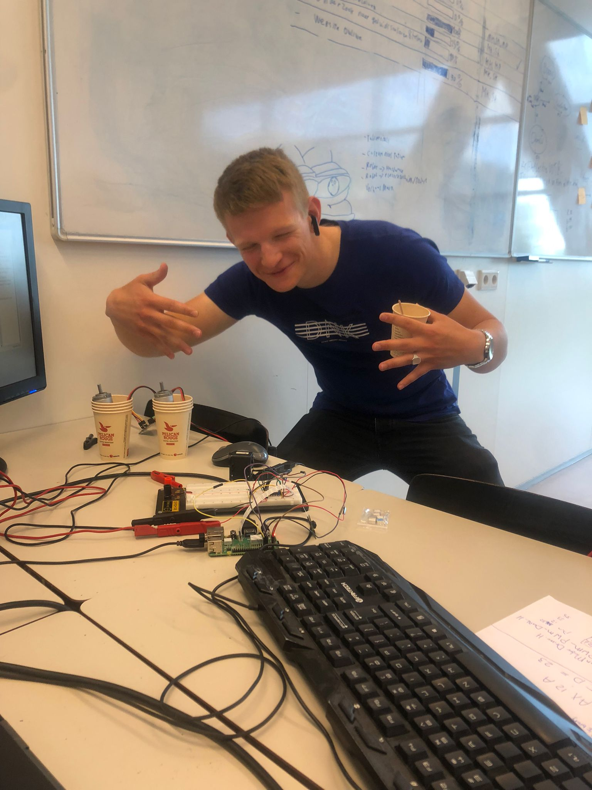
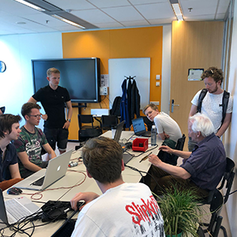
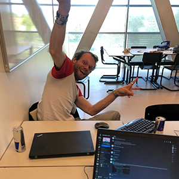
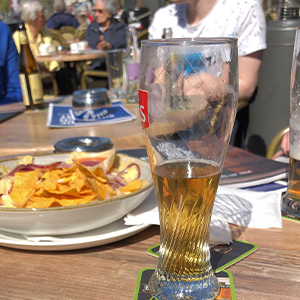

Etentje
We zijn met de mensen die konden uit eten gegaan bij de lachende koe.
We zijn met de mensen die konden uit eten gegaan bij de lachende koe.
De arm is af en hoeft nu alleen nog maar de kop erop gezet te worden. Er is getest en we zijn erachter gekomen dat de arm net niet 1 kilo kan tillen. Hiervoor hebben we ook al oplossingen bedacht die we later in het project gaan toepassen.
De controller is af en verstuurd data, nu is het aan ict om die data te ontvangen en ermee wat te doen.
We hebben het vandaag voor elkaar gekregen, met samenwerking van elektro en ict, dat we de dc motoren met code kunnen aansturen.
Vandaag hadden we onze deelfunctie en we hadden een paar hick ups, waardoor we bepaalde dingen niet konden laten zien. Ook hebben we goeie feedback terug gekregen van de docenten die we weer meteen gaan toepassen.
We hebben het vandaag over de deelfunctie demo gehad met onze tutor en de dingen laten zien die we ook tijdens de deelfucntie demo gaan laten zien.
Vandaag hebben Martijn en Sander de website online gezet. De layout van de website is af en er is een begin gemaakt aan de telemetrie laten zien van de robot.
We hadden vandaag onze design proposal en moesten voor de docenten van alle disciplines ons idee en ontwerpen voor de robot presenteren. De presentatie ging goed en we kregen een goedkeuring van de docenten over ons plan.
We hadden vandaag onze eerste tutor gesprek met onze tutor Wouter van der Ploeg. Het gesprek verliep geweldig en Wouter kon onze hele groepje effe leren kennen.
Vandaag hadden we onze kick off van het project. We hebben we ons groepje gemaakt en zijn we samen naar een terras gegaan om elkaar te leren kennen.
